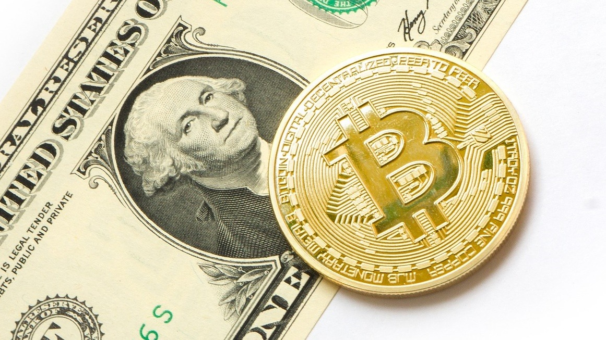

Where Do Stolen Cryptocurrencies Go?

Major crypto trading platforms are hacked almost every other month, and the latest significant breach has led to Italian digital coin exchange Altsbit announcing its closure in May.Over 6.900 Bitcoin and 20 Ethereum coins were stolen on February 5.The anonymity provided by cryptocurrencies makes them an appealing asset for money launderers and cybercriminals, and a major hassle for the authorities.
What Happens to Stolen Coins
Chainalysis, a blockchain analytics company, has reported that a sizeable proportion of laundered crypto ends up in major exchanges, some with austere Know Your Customer (KYC) requirements.Although digital currencies favor cybercriminals by providing anonymity, the transparency property of the underlying blockchain technology allows the funds to be tracked.
Illegal Bitcoin Worth Billions Sent To Well-Known Crypto Exchanges
Throughout 2019, Chainalysis tracked $3 billion in Bitcoin linked to criminal activity.Over half of them were laundered through the two largest crypto marketplaces, Binance and Huobi.The disclosure is surprising, since these two prominent exchanges require customers to abide by KYC regulations.
The report highlighted that over 300,000 accounts on both platforms received Bitcoin linked to criminal activities.The majority of these illegal funds valued at approximately $819 million went to just 810 accounts.
'70 of the OTC brokers in the Rogue 100 are in the group of Huobi accounts receiving Bitcoin from illicit sources.32 of them are in the group of 810 accounts receiving the most illicit Bitcoin, and 20 of them received $1 million or more worth of illicit Bitcoin in 2019.'
Binance CEO, Changpeng Zhao, has openly defended his company against the allegations and accused Chainalysis via Tweet of charging clients for access of the data.
'Also knowing Chainalysis’ business is charging exchanges for this data.If they make that data publicly available, that problem wouldn’t exist.We are a paying client for them too.I guess we don’t pay enough.Bad business etiquette for them to do this.'
Who Is Behind The Criminal Crypto Activity?
Most of the accounts that dealt in large amounts of illegal Bitcoin are thought to be used by over-the-counter (OTC) brokers.OTC brokers facilitate trading between individual buyers and sellers who cannot or do not want to trade on open exchanges.They operate in conjunction with major crypto platforms, but sometimes independently.The know-your-customer rules for OTC desks are less stringent, and so criminals take advantage of this loophole.
While most OTC brokers do legitimate business, some of them specialize in providing money-laundering services to criminals.The process usually starts with the exchange of BTC for other digital coins such as Tether.The stablecoin is usually used to prevent the fluctuation of value.The funds are then exchanged for fiat currency.
The Chainalysis investigation reveals that 100 of the largest OTC brokers are allegedly involved in money laundering transactions.Twenty of these OTC brokers are alleged to have received $1 million or more in Bitcoin.
Security concerns have always been the biggest issue when it comes to cryptocurrencies.Some regions, such as the E.U. and the United States, have strict crypto anti-money laundering statutes.Entities found to be engaged in such activities face major legal ramifications.This explains why most money laundering activities are carried out via offshore exchanges.
[bsa_pro_ad_space id=4]
Share on Facebook Tweet Follow us
Posted On: 2020-02-19T00:00:00
Posted By: Samuel Gush


Content Date: 2020-02-19
Download Date: 2021-07-09
Document ID: L0C04DR2B